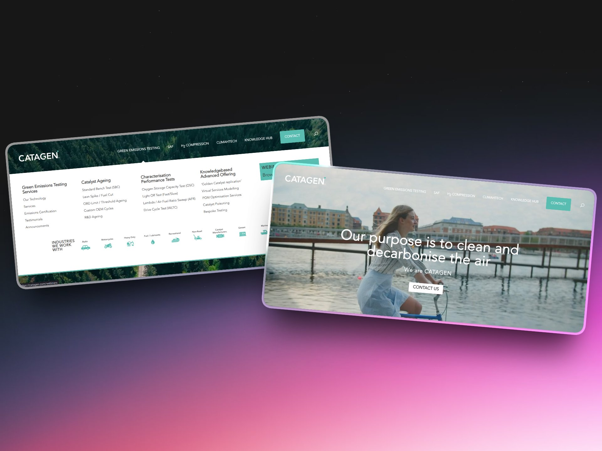
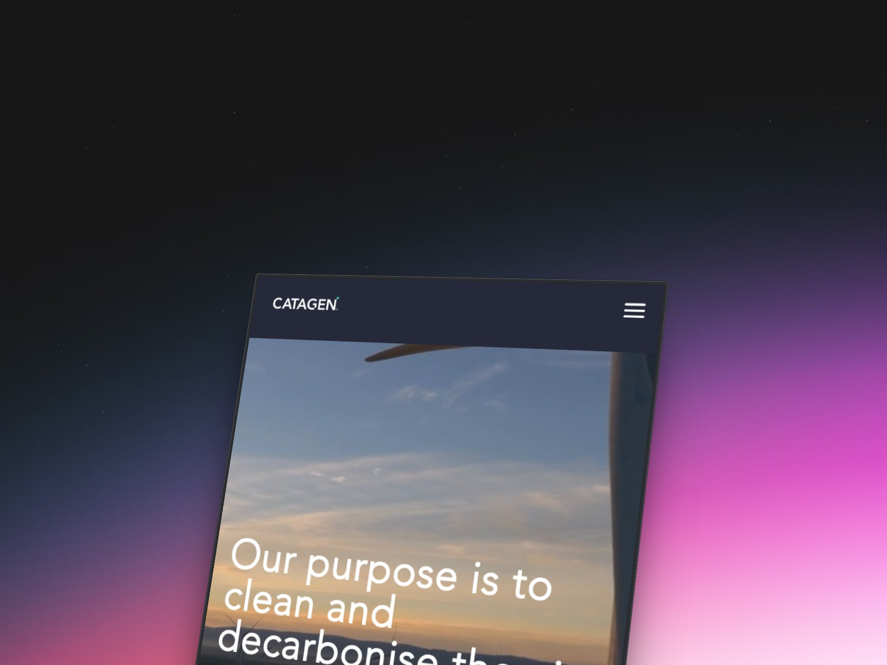
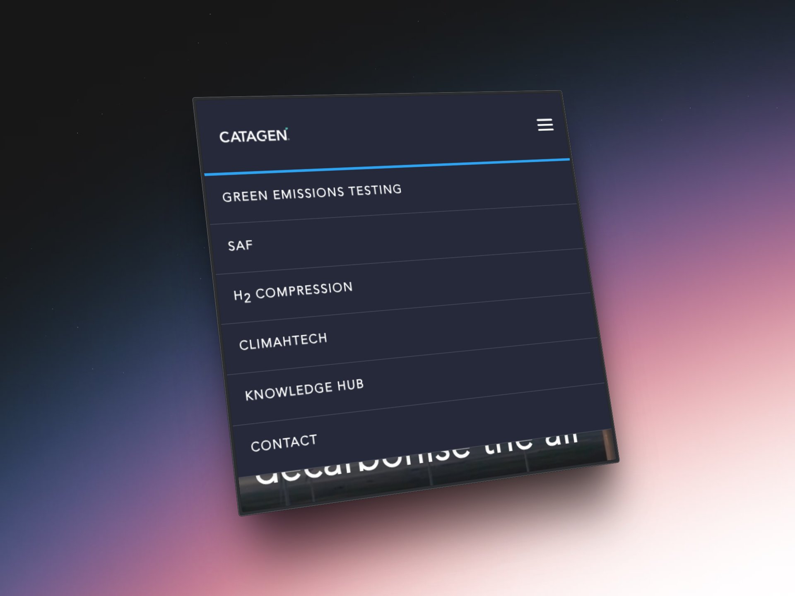

Case StudyHow we migrated a growing emissions testing company to a flexible, enterprise-grade WordPress solution that scales with their team.
Catagen came to us with a problem many growing businesses face: they had outgrown their website platform. Their Squarespace site had served them well in the early days, but as their team expanded and their technical requirements became more sophisticated, the limitations became clear.
They needed a platform that could handle their current requirements while remaining flexible enough to accommodate future growth — without sacrificing the ease of use their team had come to expect.
We rebuilt Catagen's entire web presence from the ground up on WordPress, hosted on WP Engine — a managed WordPress platform known for enterprise-grade performance, security, and reliability.
The approach was straightforward but comprehensive:
The goal was to give Catagen the best of both worlds: the power and flexibility of WordPress with the ease of use they had on Squarespace.

The migration to WordPress wasn't just a technical upgrade — it fundamentally changed how Catagen manages their online presence.
Built on WP Engine's infrastructure with performance optimization baked in from the start. The site handles traffic spikes and content growth without breaking a sweat.
Catagen staff can make content updates, add pages, and publish news without needing a developer. Divi gives them creative control with guardrails.
Automated backups, security monitoring, and regular maintenance mean the Catagen team can focus on emissions testing — not WordPress troubleshooting.
Four years of ongoing support means we've evolved the site alongside the business, adding features and optimizations as needs change.
The site is fully responsive, delivering a seamless experience whether the Catagen team is updating content from a desktop or their customers are browsing on mobile.
The navigation adapts intelligently across devices, ensuring easy access to all content whether browsing services, reading case studies, or getting in touch.


Today, Catagen has a website that reflects the quality and professionalism of their work in green emissions testing — and a platform that will grow with them for years to come.
"Chris handled our migration seamlessly and has been invaluable ever since. His technical expertise and responsiveness gave us confidence to focus on our business while he managed everything WordPress-related."
Let's talk about what a tailored WordPress solution could do for you.
Get Your Free Audit